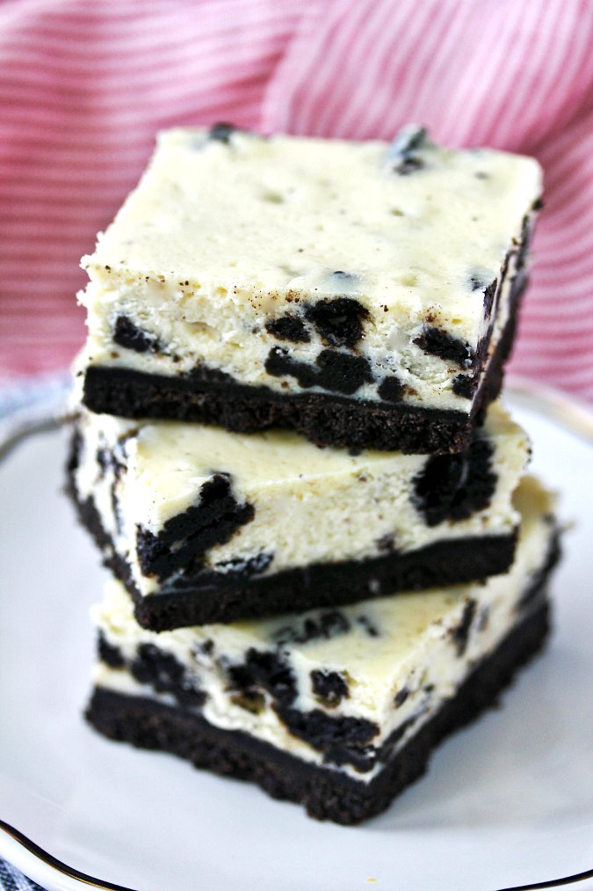

Oreo Cheesecake Bar

Description
These oreo cheesecake bars are simply irresistible for everyone loving cookies and cream. They are surprisingly easy to make and are the perfect treat for lots of people.
Ingredients
- Oreos: This recipe starts with a package of Oreos (or your preferred chocolate sandwich cookies with white filling).
- Butter: Half a stick of salted butter lends richness and flavor.
- Cream cheese: Of course, you will need softened cream cheese for these cream cheese bars.
- Sugar: A cup of white sugar lends the perfect amount of sweetness.
- Sour cream: Sour cream adds creaminess and subtle tangy flavor.
- Eggs: Three eggs give the bars richness and help bind the batter together.
- Vanilla: Vanilla extract enhances the overall flavor.
- Salt: A pinch of salt also enhances the flavor, but it wont make the bars taste salty.
How to Make Oreo Cheesecake Bars
- Pulse the cookies in a food processor. Pulse again with butter.
- Press the mixture into a prepared pan and bake until set.
- Make the filling, pour the batter onto the crust, and sprinkle with cookie crumbs.
- Bake until the filling is set, cool, and chill.
- Cut the Oreo cheesecake bars into squares.